Restaurants & Bars
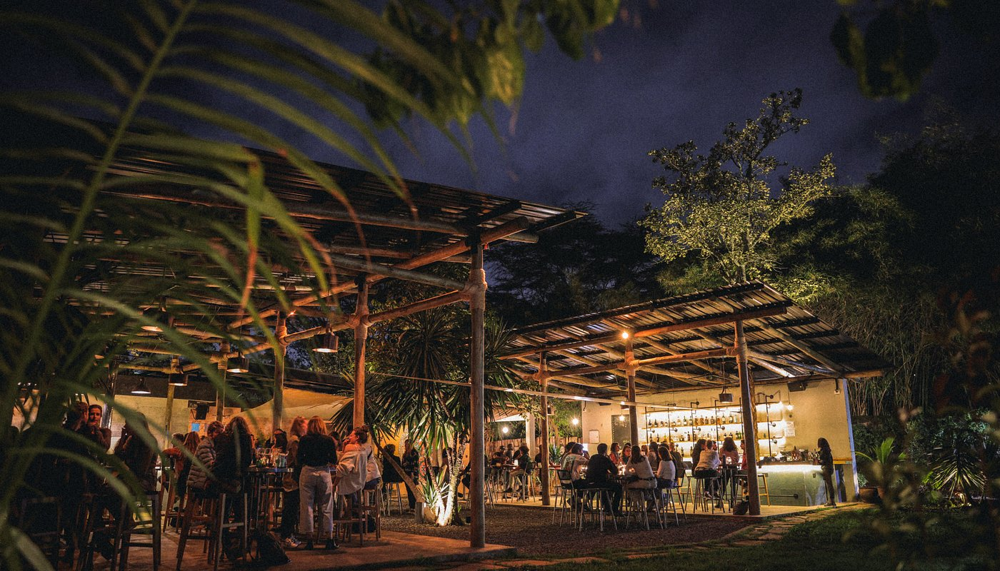
Bamba
Menu reflects the Sudanese-Lebanese-Palestinian trio of owners; great live music on the weekends
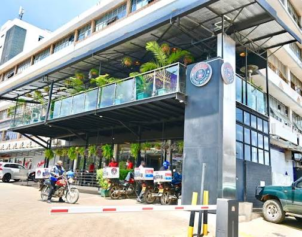
Slush Coffee World
As close to good Indian street food as we get in Nairobi

The River Cafe
Beautiful cafe in the middle of Karura forest - get a juice, coffee or grab a leisurely lunch
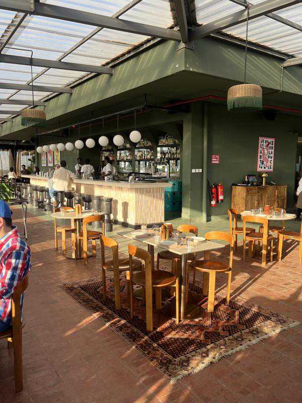
Dijo
Rooftop French bistro
Other Places
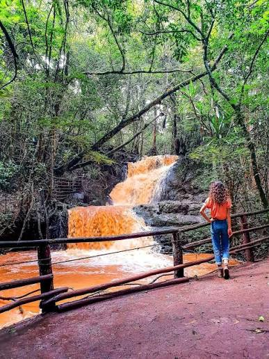
Karura Forest
A forest in a city - you can walk or run up to 15 kms through epic trails!
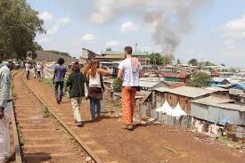
Kibera Art Tours
There's a growing art scene in Kibera, the informal settlement in Nairobi (and one of the biggest settlements in Africa) - guided art tours are one of Prerna's favorite things to do with visitors
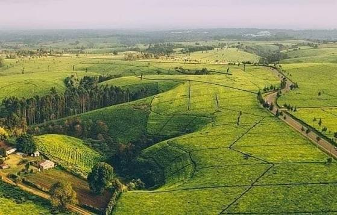
Tigoni Tea Farms
We can be amidst tea farms just an hour from Nairobi

Masai Mara
Important if you want to see lots of cats, otherwise there's lots of other very beautiful parks in Kenya (and that are much cheaper!)
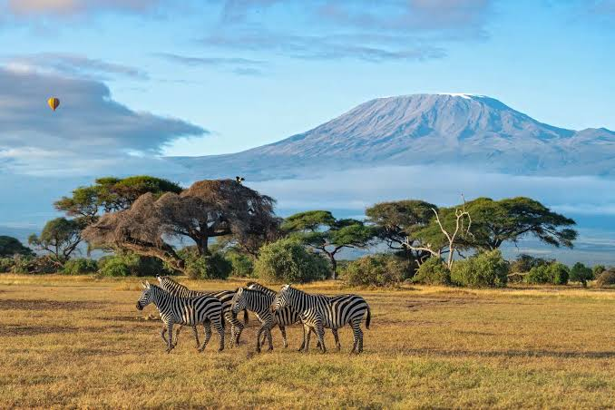
Amboseli National Park
Lots of elephants and views on Mt. Kilimanjaro, if you're lucky
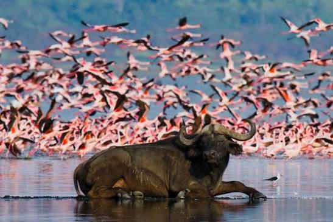
Nakuru National Park
A very scenic park that you can add to a trip with lake Naivasha, Hell's Gate and Crescent Island (ask us about our lion sightings in Nakuru!)
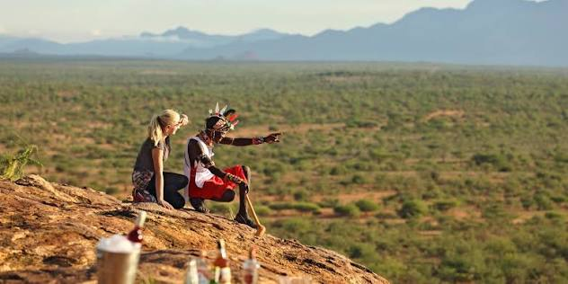
Samburu National Park
The only park where you can see the 'Special 5'
Hells Gate National Park
Inspiration for the Lion King!
Crescent Island
Lovely walking safari
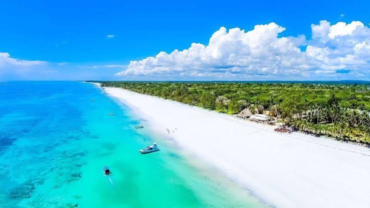
Diani
Coastline for days, especially at Galu Beach. Great restaurants and a number of places to stay.
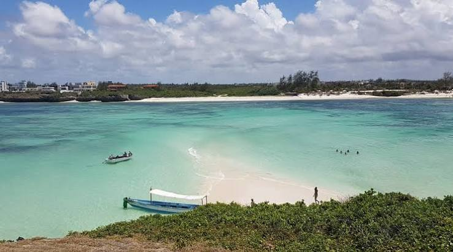
Watamu
Always fun, and Garuda Beach is lovely (and one of the few parts of the coastline where you can rent beds on the beach)
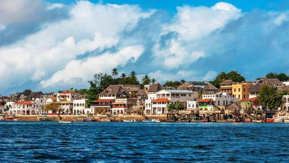
Lamu
A car-free, Swahili part of the coast - long-time destination for celebrities, who you may even bump into at Peponi Hotel. Go for the vibes - no beach here unless you stay on the other side of Lamu
We recommend you get a guide or ranger for any hike, unless you're an experienced hiker. A guide for Mount Kenya is mandatory.
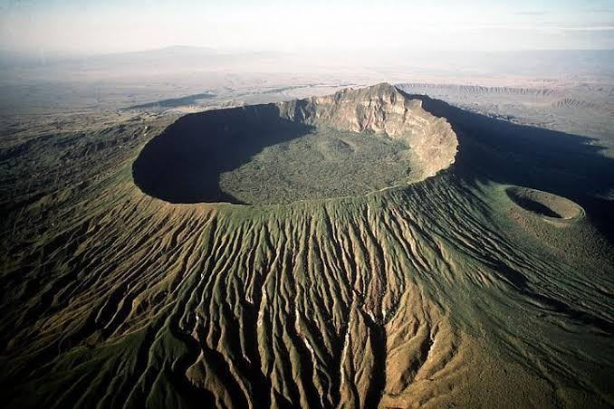
Mount Longonot
Distance from Nairobi: 2.5 hours
Steep, but the crater forest at the top is special. Can be combined with Hell's Gate National Park, Lake Naivasha, Crescent Island, and Nakuru National Park over 2-3 days.

Mount Kenya
Distance from Nairobi: 4 hours
Incredible flora (think Dr. Seuss) and spectacular scenery. You can hike for a day or spend 3-4 days climbing to the top
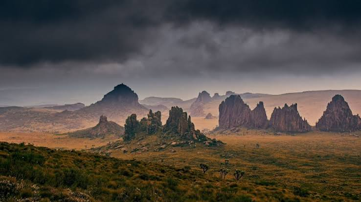
Mount Satima & Dragon's Teeth
Distance from Nairobi: 6 hours
Another spectacular day hike in the Aberdares Mountain Range

Gorilla Trekking
If there's one thing you should do in Uganda, it's see the gorillas

Lake Bunyoni
Beautiful and tranquil lake surrounded by lovely lodges
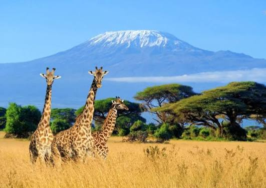
Kilimanjaro
Highest peak in Africa, need we say more?
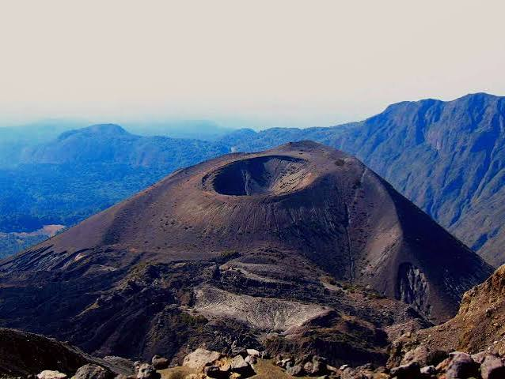
Mount Meru
Incredible views of the highest peak in Africa, and the summit is unreal

Ngorongoro Crater
A wildlife park in a crater
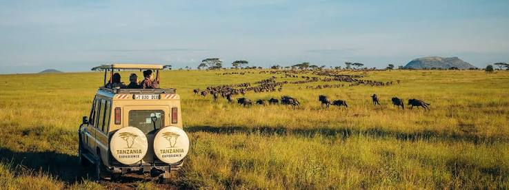
Serengeti
The Masai Mara's bigger sibling/other half
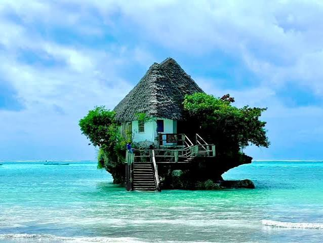
Zanzibar
We prefer the Kenyan coast, but Zanzibar, especially the old town, is beautiful